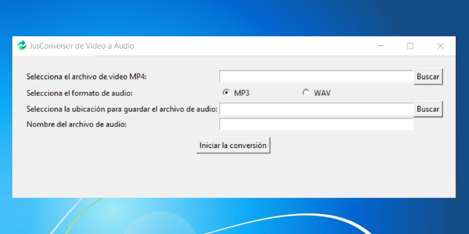

Una herramienta minimalista, portable y gratuita para Windows. Sin instalaciones complejas ni pérdida de privacidad.

Sin distracciones ni procesos complejos. Solo convierte tus archivos y sigue con tu día.
No requiere instalación. Llévalo en tu USB o guárdalo en tu escritorio. Abrir y usar al instante.
Tus videos nunca salen de tu PC. La conversión ocurre localmente, garantizando seguridad total.
Sin límites de conversión, sin marcas de agua y sin registros. Software libre hecho para la comunidad.